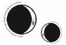

CAPÍTULO 41
Octubris 1786
La guerra siempre había avanzado despacio, pero al llegar el otoño su ritmo pareció ralentizarse todavía más. Ambos bandos controlaban casi la misma extensión de territorio. Hacerse con el control de la zona portuaria le había dado un impulso considerable a la Llama Eterna, pero el camino hacia la victoria seguía siendo incierto. La disposición de la isla Oeste era aún más vertical que la de la Este, y las múltiples intersecciones entre torres y edificios convertían la ciudad en un laberinto casi imposible de recuperar sin arriesgarse a tener numerosas bajas.
Kaine era el responsable de que la Resistencia y los inmarcesibles estuvieran casi en igualdad de condiciones, aunque la situación era delicada: no sabían si llegaría algún día en que dejaría de colaborar o, lo que era aún peor, los acabaría traicionando.
En cuanto reapareció, la presión que Ilva y Crowther habían estado ejerciendo sobre Helena se multiplicó por diez, aunque ella no sabía cómo seguir avanzando. Kaine estaba siempre de mal humor y a la defensiva con ella. Además, aunque Helena se había dado cuenta de que ahora tenía mucho más cuidado de no hacerle daño, su método de entrenamiento no daba pie a interactuar de otra forma que no fuera peleando.
Bajo su mirada implacable, Helena aprendió a amplificar su resonancia hasta inundar el espacio a su alrededor para anticipar cualquier ataque con tiempo para reaccionar.
—¡Ya era hora! —exclamó cuando ella consiguió no solo bloquear uno de sus rapidísimos golpes sin perder la posición de ataque, sino devolvérselo.
Aquello fue lo más parecido a un elogio que había salido de sus labios desde que empezaron a practicar.
Helena se derrumbó contra la pared mientras recuperaba el aliento. Le ardían todos los músculos de los brazos por haber pasado tanto tiempo transmutando metales. También le dolían los nervios por abusar de la resonancia, y su cerebro, que iba a mil por hora, emitía una vibración que hacía que le hormiguearan los dientes.
Ahora entendía por qué Lila siempre regresaba alterada del campo de batalla.
Apretó los puños.
—Vas a necesitar un arma mejor. La aleación de la hoja te está ralentizando.
Helena apartó la mirada. Fuera estaba lloviendo y el agua resbalaba por el cristal de las ventanas. Sentía tanto calor que le habría gustado salir y dejar que la lluvia fresca del otoño la empapara.
—Mi rango no me permite solicitar nada mejor.
Los metalúrgicos de la Resistencia contaban con un extenso historial de trabajos realizados, desde herramientas, armas básicas y piezas de arnés hasta armaduras y prótesis. Además, se esperaba que fueran desarrollando nuevas armas a medida que la guerra avanzaba. Dado que la Academia no podría formar nuevos metalúrgicos, los especialistas con los que contaban eran un recurso vital para la causa. La generación que debería estar aprendiendo el oficio para relevarlos estaba combatiendo o había muerto, así que los miembros de la Resistencia tenían que conformarse con las armas reglamentarias disponibles. Si no eran capaces de luchar con ellas, tampoco podrían hacerlo como alquimistas.
Todos los alquimistas de combate soñaban con tener un arma a medida, forjada para ajustarse a sus habilidades resonánticas y a su estilo de combate. Esas armas eran versátiles, ligeras como una pluma y muy fáciles de transmutar, por lo que al enemigo le resultaba mucho más complicado defenderse.
—¿Cómo que no? ¿Acaso no eres miembro de la Llama Eterna?
—Sí —respondió ella en un susurro.
—Pensaba que las armas formaban parte del paquete completo, que os entregaban un arma valiosa en compensación por comprometeros de por vida a seguir esos ideales religiosos tan estúpidos que profesáis.
Helena clavó la vista en sus zapatos.
No se equivocaba. La tradición dictaba que, al concluir la ceremonia de los votos, la Orden de la Llama Eterna debía entregar un arma a cada iniciado para defender los ideales que había jurado seguir. Era un gesto cargado de simbolismo.
Sin embargo, Helena se unió a la Orden justo después del asesinato del principado Apollo, y muchas otras personas hicieron lo mismo. Tenía dieciséis años y apenas había empezado a formarse. Los nuevos miembros, que pronto partirían al campo de batalla, las habían necesitado más que ella. De hecho, Helena ni siquiera sabía qué tipo de arma se adaptaría mejor a sus habilidades.
Cuando pasó a trabajar como sanadora, ese asunto había quedado olvidado. Las armas eran para los combatientes y ella ni lo era ni lo sería jamás.
—Forjar un arma especial que apenas iba a usar no era una de nuestras prioridades.
—Pues ahora tendrá que serlo. Creo que han tenido tiempo suficiente en estos seis años. ¿Cuántas espadas y armaduras tiene Holdfast?
Helena se puso a la defensiva.
—Te recuerdo que Luc lucha en el frente.
—Sí, con fuego —resopló Kaine con evidente desagrado—. Haz el favor de conseguir un cuchillo decente.
Helena regresó con el mismo cuchillo.
Kaine estaba al otro lado de la estancia cuando sacó el cuchillo de la bolsa, pero se movió a una velocidad vertiginosa y se detuvo ante ella para arrancárselo de la mano.
—¿Por qué sigues trayéndolo? —siseó—. Te dije que consiguieras uno nuevo.
—No pueden ponerme la primera en la lista, así sin más —explicó ella tratando de recuperarlo—. La gente sabe que hay que esperar semanas antes de que te hagan las pruebas. Llamaría demasiado la atención que me dieran prioridad de repente. —Echó la cabeza hacia atrás para observarlo fijamente y repitió, palabra por palabra, lo que le habían dicho cuando solicitó el arma—: «No podemos aceptar tu petición. Suscitaría demasiadas preguntas».
Ferron la miró como si quisiera estrangularla y levantó el brazo con la intención de tirar el cuchillo por la ventana, pero, finalmente, respiró hondo para calmarse.
—Entonces, dime cuál es tu aleación resonántica —le pidió, dejando el arma sobre la mesa con un golpetazo.
—¿Qué?
Su expresión se volvió gélida.
—¿Ni eso vas a poder hacer?
—Sí…, pero…
La había dejado muda.
—¿Qué pasa?
Las armas hechas a medida tenían un precio prohibitivo fuera de la Llama Eterna, por eso suponía un gran honor recibir una al tomar los votos. Y más cuando, a raíz de la guerra, la mayor parte de los metalúrgicos que no se habían unido a uno u otro bando habían huido de Paladia, llevándose consigo su valioso talento a países más seguros.
Helena se quedó mirándolo sin decir nada hasta que él rompió el contacto visual.
—Considéralo mi forma de darte las gracias por haberme curado la espalda.
—¿Se te ha… se te ha asentado bien el tejido cicatrizado? —le preguntó aprovechando la oportunidad—. Después de haberte curado, volví a comprobar cómo estabas…, pero no…
—Está bien —la interrumpió con la voz y la postura tensas. Había girado el rostro, así que Helena solo le veía la mandíbula—. Apenas lo noto.
—Bien —suspiró ella—. Temía que hubieras dejado de venir porque algo había salido mal…
Kaine se volvió hacia ella.
—Lo que haga o deje de hacer no es de tu puta incumbencia.
Helena dio un respingo.
—Lo que quería decir es que…
—Vete a la mierda, Marino —le espetó con voz mortífera—. No soy tu perrito faldero y no te necesito.
Antes de que Helena pudiera contestar, sacó un sobre del bolsillo interior de la chaqueta, lo dejó junto al cuchillo y salió pisando con fuerza.
Helena se lo guardó en el bolsillo exterior de la bolsa y regresó al Cuartel General sin bajar la guardia hasta que llegó al primer puesto de control. Entonces aminoró el paso sin que le importara mojarse por la lluvia.
¿Qué le había contado sobre el sello? Que, en vez de ir en contra de su personalidad, le añadía nuevos rasgos. Que le resultaba más fácil ser implacable, pero que también le impedía resistirse a sus impulsos y deseos.
Había pasado tantas tardes observándolo que podría dibujarlo con los ojos cerrados.
Calculador, astuto, devoto, tenaz, implacable, eficaz, resuelto y severo.
Lo que Kaine debía hacer no aparecía en el sello, así que quedaba a su elección. Estaba segura de que se creía muy listo por haberse dejado esa laguna como vía de escape.
Pero Helena también se había aprovechado de ella.
Ilva y Crowther habían decidido correr el riesgo de rechazar la petición de Kaine para ver cómo reaccionaba ante una negativa. La excusa que habían puesto para no darle un nuevo cuchillo era legítima, aunque la verdadera intención era ponerlo a prueba para obligarlo a mostrar sus cartas. Y eso era exactamente lo que había hecho.
Helena estaba avanzando.
Pero, en vez de sentirse orgullosa, lo único en lo que podía pensar era en lo mentirosa que estaba siendo y en el peligro al que se exponía.
Al salir de su ensimismamiento, se dio cuenta de que había llegado al jardín de infiltración. El riachuelo bajaba tan crecido que anegaba las riberas y fluía alrededor del pedestal de Luna. Sin embargo, la torre de guijarros que había construido seguía en pie meses después, como si todas sus plegarias hubieran sido ignoradas. Decidió tirar la piedra que estaba en lo alto por su propia mano.
Alzó la vista para admirar los edificios que se erguían sobre ella y dejó que la lluvia le salpicara el rostro. A veces, todavía se sorprendía al recordar lo hermosa que podía llegar a ser la ciudad.
Incluso con el aguacero, los edificios resplandecían.
Contempló el santuario abandonado de nuevo.
«Sobrevive», le había repetido Kaine sin descanso. Ese era su único objetivo. Si Helena estaba aprendiendo a luchar no era para vencer, sino para escapar, como si fuera un animal de presa.
Era muy consciente de que, si en algún momento se veía obligada a enfrentarse a Kaine, ella moriría. Por muy igualadas que estuvieran sus habilidades alquímicas, el asesinato era una competencia exclusiva de él.
Sonrió con amargura al constatar la diferencia.
La cifra de muertes que le manchaba las manos no era sino la representación numérica de sus fracasos, de todas las vidas que no había conseguido salvar, de todos los momentos en que no había estado a la altura.
Para Kaine, en cambio, era una muestra de su poder. Sus víctimas, incluso el principado Apollo, representaban aquello que lo hacía valioso.
Eran dos caras de una misma moneda.
Una sanadora y un asesino, acechándose, atrapados en un inevitable tira y afloja.
Desde que la Resistencia se había hecho con el control de la isla, su base de operaciones se había ampliado. El Cuartel General seguía siendo el emplazamiento más protegido, pero obligar a las unidades de combate y a las expediciones de abastecimiento a desplazarse de un extremo a otro del territorio era una pérdida de tiempo y recursos. Por eso, habían establecido una segunda base de mando cerca de la zona portuaria, junto a un hospital secundario. Por el momento, habían destinado a la enfermera Pace allí para que lo pusiera todo en marcha.
Luc ya casi nunca regresaba al Cuartel General e incluso Crowther permanecía ausente la mayor parte del tiempo.
Helena le llevó el informe directamente a Ilva, que no abandonaba nunca la base principal.
—¿Y bien? —le preguntó la mujer al verla entrar en su despacho.
—Me ha preguntado por mi aleación —dijo Helena mientras tomaba asiento ante el escritorio y le tendía el sobre—. Dice que se encargará de conseguirme un arma.
Ilva levantó la mirada y la luz del sol le iluminó los ojos de color azul pálido.
—Ah, ¿sí?
Helena se examinó las uñas, aún manchadas de tierra. La piel de alrededor se había teñido de verde por recolectar ingredientes.
—Me ha dicho que es su forma de darme las gracias por curarlo.
—Seguro —coincidió Ilva con un tono cantarín lleno de sarcasmo.
Helena se mordió el labio. Odiaba tener que informarles de todas sus conversaciones e interacciones con Kaine, desgranar cada palabra, cada gesto, silencio. Odiaba que Ilva o Crowther lo sometieran a una especie de disección emocional para identificar sus puntos débiles y que así Helena pudiera aprovecharlos en su siguiente encuentro.
—¿Algo más?
Helena reparó en que Ilva la observaba con atención. Desde que Kaine había retomado el entrenamiento, la mujer ya no se mostraba tan distante con ella. Ahora que Helena volvía a resultarle útil, Ilva consideraba que merecía unos minutos de su valioso tiempo.
—Tal como avanza la situación, no descartaría que Ferron acabara matándome.
Ilva estiró la espalda y apretó los labios hasta hacerlos desaparecer.
—¿Estás pidiendo que te retiremos de la misión, Marino? —preguntó con una repentina intensidad en la voz.
A Helena se le hizo un nudo en el pecho y negó con la cabeza.
—No. Necesitamos la información. Es solo que… quiero saber cuál es mi prioridad. Elain es la sanadora que mejor preparada está para sustituirme, pero todavía le queda mucho por aprender en cuanto a conocimientos médicos básicos. Y ni siquiera eso sin contar las técnicas de sanación más complejas, que se niega a practicar por miedo. El trabajo no la motiva tanto como debería, pero creo que lo más adecuado sería que el Consejo la nombrara mi sustituta para que yo tenga algo con lo que presionarla.
—Hablaré con Jan y revisaré los informes del hospital. Nos vendría bien que prepararas una lista con las áreas en las que menos os solapáis.
—Me encargaré de ello —respondió Helena con tono seco y mecánico. Entonces se le ocurrió algo—. Shiseo… es metalúrgico. ¿Podrías pedirle que me haga una prueba para determinar cuál es mi aleación?
Ilva carraspeó.
—Como quieras.
Helena se levantó, pero la mujer la llamó con suavidad cuando estaba a punto de alcanzar la puerta, así que se detuvo y se volvió para mirarla. La expresión de Ilva era indescifrable.
—Dime, ¿qué estrategia tienes pensado seguir con Ferron ahora?
Ella lo meditó un momento. Estaba agotada. Ya ni siquiera recordaba cuándo había sido la última vez que se sintió descansada. Se apoyó en la puerta para sostenerse.
—Creo… que me desea. Desde que lo curé, las cosas entre nosotros han cambiado, pero se ha dado cuenta de lo que estoy haciendo. —Tragó saliva—. Se obsesiona mucho con todo. Me parece que siempre ha sido así, pero el sello solo lo intensifica. Si todo sale según lo previsto, eso nos proporcionará una ventaja, porque ya no le dará la espalda a la Llama Eterna. Según parece, para él es fundamental que los demás actúen libremente, y sabe que mi cooperación depende de la supervivencia de la Llama Eterna. Sin embargo…, teniendo en cuenta lo lejos que ha estado dispuesto a llegar por salirse con la suya, diría que hay una posibilidad de que destruya todo lo que se interponga en su camino. Y eso tal vez me incluya a mí.
Ilva la observó en silencio.
Helena se sentía desnuda, como si la estuvieran examinando después de haberle arrancado la piel.
—A lo mejor le estoy dando demasiadas vueltas al asunto.
Ilva bajó la mirada hacia el escritorio, cogió un pisapapeles de cristal y comenzó a darle vueltas entre las manos.
—Has llegado mucho más lejos de lo que esperaba.
¿Se suponía que con eso debía sentirse mejor?
Aunque sabía que debería estar sintiendo algo, Helena tenía la impresión de que su corazón se le estaba compactando en el pecho, que se hacía más duro y pequeño cada día que pasaba. Solía pensar que tenía tanto que ofrecer al mundo que su chispa jamás se apagaría. Pero en ese momento se sentía como una jarra volcada sobre un vaso, impaciente por aprovechar hasta la última gota.
—Yo no… —Se interrumpió y se puso a girar el anillo que llevaba en el dedo—. Creo que se siente solo.
Ilva se enderezó hasta quedar un par de centímetros más alta.
—Espero que no te estés encariñando de él, Helena. La Llama Eterna depende de tu misión. Si te ves en una situación comprometida, debes decírnoslo.
Helena negó con la cabeza. Tendría que haberse mordido la lengua.
—Eso nunca pasará. Siempre le seré fiel a la Llama Eterna.
Pero sus palabras no parecieron tranquilizar a Ilva.
—La única manera que tengo de mantener a Luc y su unidad alejados de las batallas más duras es saber de antemano cuáles van a ser —dijo despacio.
A Helena le dio un vuelco el corazón.
—Lo sé —dijo Helena notando un nudo en la garganta—. Estoy haciéndolo lo mejor que puedo. Jamás pondría en riesgo a Luc.
—Está bien —dijo Ilva, más relajada—. Ya puedes irte.
Agitó la mano con un gesto que la invitaba a salir y volvió a centrar su atención en los documentos que tenía ante ella.
Helena se dio la vuelta y dejó escapar una carcajada rota.
—Acabo de darme cuenta de que, si todo sale bien, controlarás a Ferron del mismo modo que me controlas a mí con Luc. Siento bastante lástima por él.
Ilva no la miró.
—Bueno, piensa que Ferron se lo merecerá mucho más que tú.